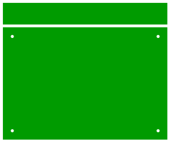
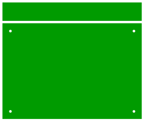
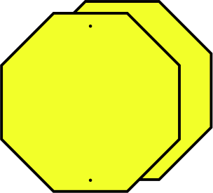
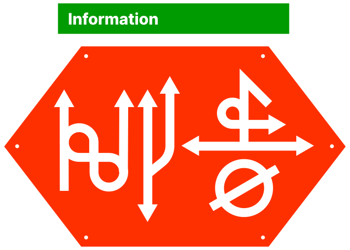
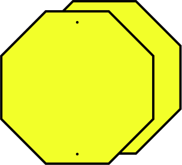
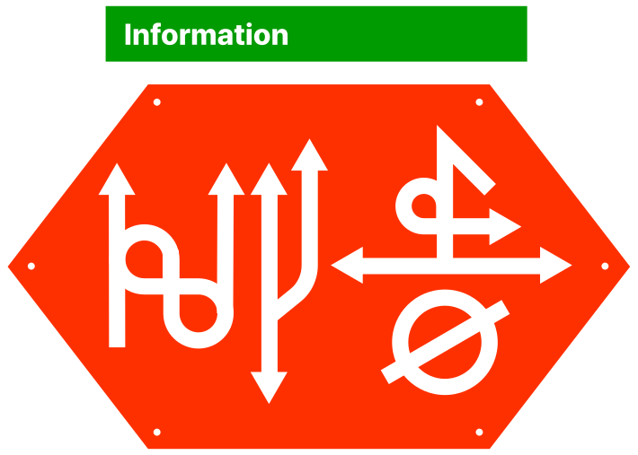

불교 윤회 사상에서 전생 기억은 업(karma)을 이해하는 방식이다.
2023년 기준, 아마존은 1초당 약 200,000건의 주문 처리 요청을 서버가 받는다.
이 주문들은 단순 데이터가 아니라, 물류센터·배송망·가격 책정·교환/반품 정책·추천
알고리즘 등 100개 이상의 결정 요소에 의해 즉시 분해된다. 우리의 한 번의 터치만
으로, 시스템은 수백 개의 일을 동시에 판단하게 된다.


 



 



1초에 20만 건, 인간은 이제 '터치'만 한다
200,000 times a second
— all it takes now is a human touch.
— all it takes now is a human touch.